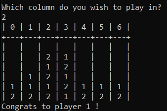

Connect Four
-
Demo
- Source
-
Details
This game was an academic project I completed during my second semester at McGill. It is a simple connect four game that you can play on the command line against the computer. It was made using Object Oriented Programming in Java. What is cool about this game is that the computer checks two moves ahead to see if it has a winning sequence, otherwise its move is dependent on the users. This makes the game surprisingly difficult to beat on the first few attempts, and it was a weird feeling when I found myself struggling to beat a game that I created.
This was the second game I coded in Java (the first was Tic-Tac-Toe), and it required a bit more complex logic to add this layer of difficulty. It was definitely enjoyable to make and even more so to play.
